Wazuh with Suricata Integration
Introduction
Hello my dear reader. In this article I will be showing you how I setup wazuh and integrate suricata with it to detect nmap scans. I will try to be specific as I can in this blog since upon building this on my own, it was so frustrating that I need to go from different articles and forums because of all these annoying errors and stuff I keep on encountering. Also this blog will serve as my future notes when rebuilding this nightmare.
Pre-requisites
1. Ubuntu Server (Wazuh Manager)
2. Ubuntu Desktop (Wazuh Agent)
3. Kali Machine (Attacker) - Although I will not include how to set this up. Find other blog post about this if you're not familiar. Actually, you don't need to to be honest, but anyways.
Setting up Wazuh Manager
I will be setting up Wazuh 4.8 version in this article.
Prepare the server with the following commands:
sudo apt update && sudo apt upgrade -y
sudo apt install curl gnupg lsb-release apt-transport-https software-properties-common -y
Install Wazuh Manager, Dashboard, and Indexer
curl -sO https://packages.wazuh.com/4.8/wazuh-install.sh
sudo bash ./wazuh-install.sh -a
After installation, visit the dashboard through https://<'server-ip'>. For the credentials, it will be displayed after installation so make sure to save that.
Setting up Wazuh Agent on Ubuntu Desktop machine
It's now time to setup your Wazuh Agent on the Ubuntu Desktop.
Visit the Wazuh Dashboard again and visit the Endpoints Summary which can be found under Server Management on the side menu.
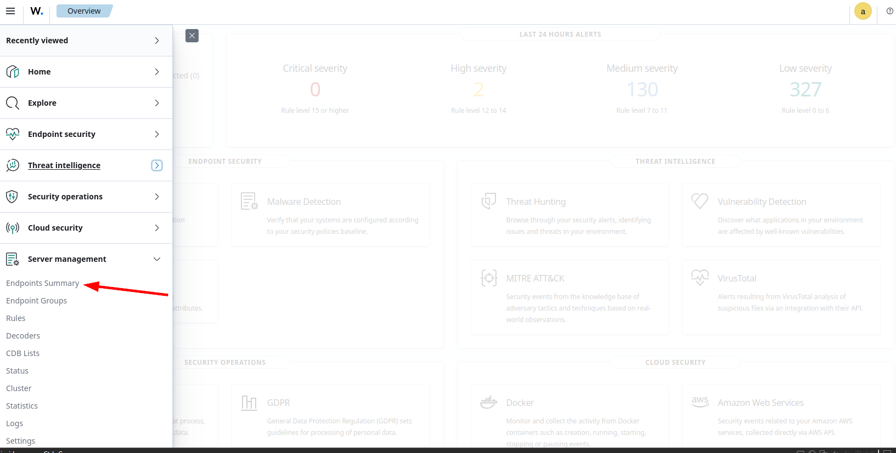
Then click on the Deploy New Agent.
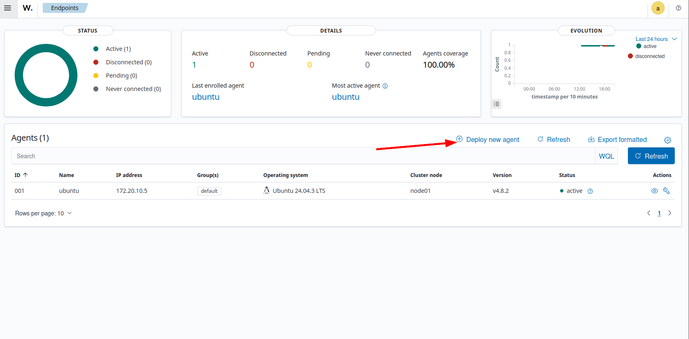
Since this article will focus on Ubuntu Desktop for the Wazuh Agent, select the DEB amd64.
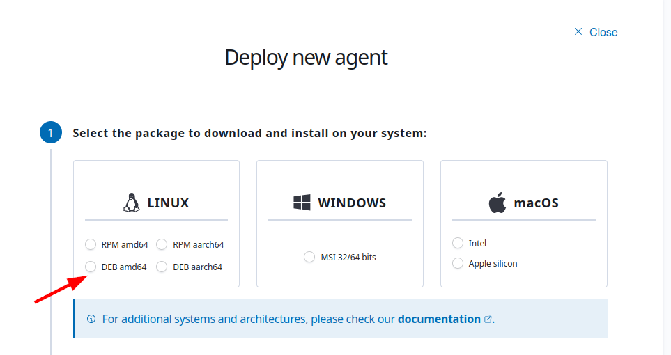
Next, input the IP of the Ubuntu Server where the Wazuh Manager is installed.
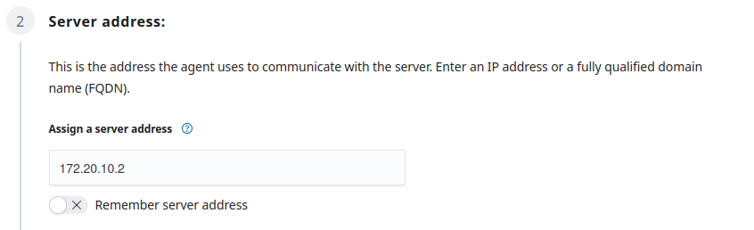
Afterwards, just put whatever agent name you want. In this case, due to poor naming skills of mine, I chose ubuntu.
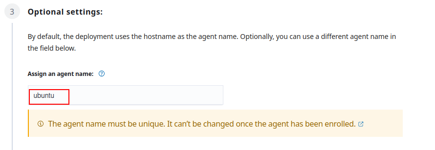
The next section is a command you need to copy and run on the Ubuntu Desktop (it's where the wazuh-agent will be installed.)
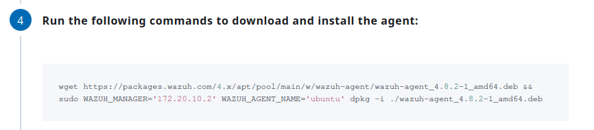
After installation, run the next commands as well.
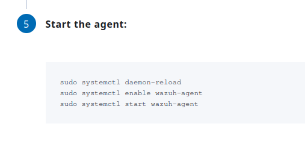
Installation and setting up Suricata
On the Ubuntu Desktop (where the wazuh-agent is installed), run the following commands:
sudo add-apt-repository ppa:oisf/suricata-stable
sudo apt-get update
sudo apt-get install suricata -y
Afterwards, we need to download and extract to a proper location the Emerging Threats Suricata ruleset:
cd /tmp/ && curl -LO https://rules.emergingthreats.net/open/suricata-6.0.8/emerging.rules.tar.gz
sudo tar -xvzf emerging.rules.tar.gz && sudo mkdir /etc/suricata/rules && sudo mv rules/*.rules /etc/suricata/rules/
sudo chmod 777 /etc/suricata/rules/*.rules
If you ever encounter some wizardy error (I don't know why I said wizardy), just make sure you are root user. Just su root run the commands again.
Now, we need to modify Suricata settings located in /etc/suricata/suricata.yaml. Take note of the following variables that we need to change:
HOME_NET: "<'IP OF YOUR UBUNTU DESKTOP'>"
EXTERNAL_NET: "any"
For the EXTERNAL_NET, uncomment the one with "any". If there is none, just add it. Also you might find this EXTERNAL_NET: "!$HOME_NET", make sure to comment that out by addting # before it.
Then in the same file, search for the default-rule-path and set the value to /etc/suricata/rules. Also modify the rule-files into *.rules. It should look like the one below:
default-rule-path: /etc/suricata/rules
rule-files:
- "*.rules"
In the same configuration file, look for af-packet and set the interface based on your system. The default was eth0, but my interface was ens33 so I changed it to that, hence it looked like this:
#Linux high speed capture support
af-packet:
- interface: ens33
Afterwards, run the command to restart the suricata service:
sudo systemctl restart suricata
Next, open the configuration file of the Wazuh Agent which is the /var/ossec/etc/ossec.conf. Add the following lines at the end of the configuration file to allow Wazuh agent to read the Suricata logs file:
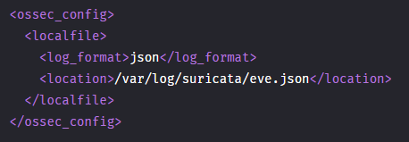
Afterwards, restart the wazuh agent to apply the changes: sudo systemctl restart wazuh-agent.
Kali Machine
Execute a nmap scan against the Ubuntu Desktop.
nmap -sS -p- -T4 -v
Wazuh Dashboard
Navigate to the
Threat Hunting. You can find it under Threat Intelligence. If you are in the overview page, you can see it like this: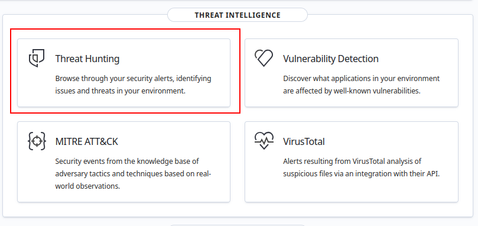
You can also find it in the side menu:
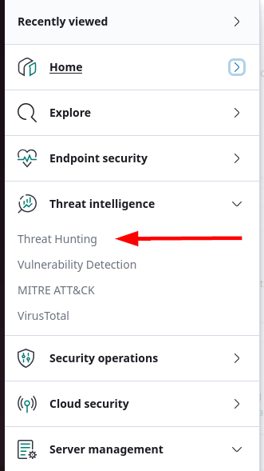
Make sure you are in the ubuntu agent then click on the Events tab.
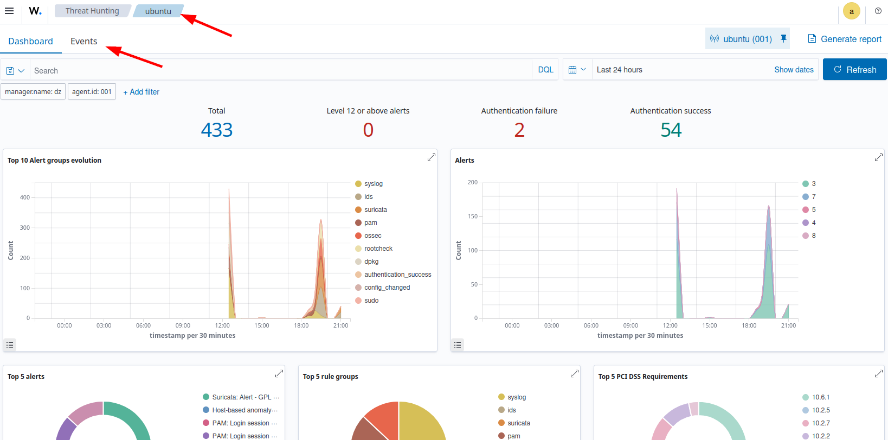
Then in the search bar, input this to sort the suricata alerts:
rule.groups:suricata
Then afterwards you should see something like this:
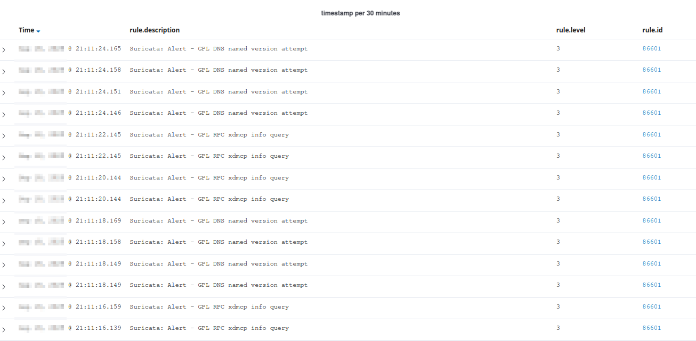
Conclusion
That's pretty straight forward. That's all.